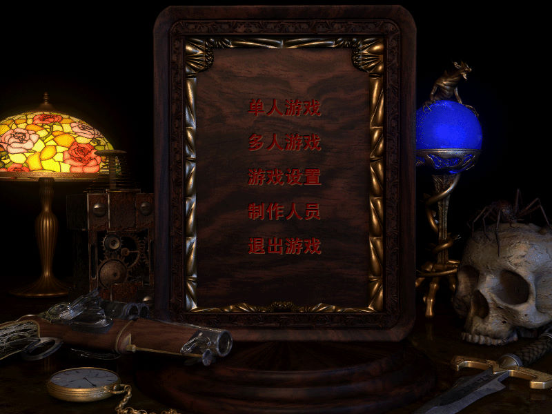
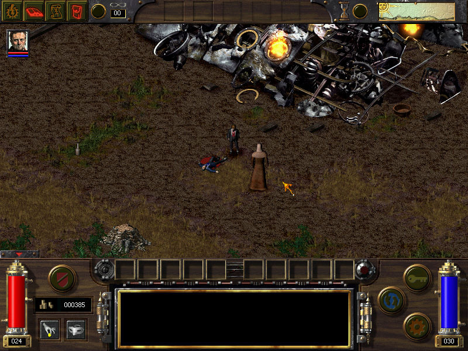
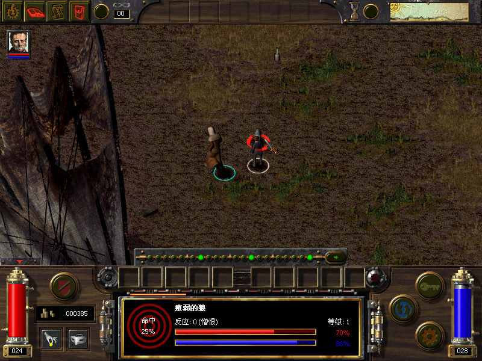

名稱：奧秘：蒸氣與魔法 (Arcanum: Of Steamworks and Magick Obscura，簡中／英文版)
簡介：Troika 2001年出品的角色扮演遊戲，由Sierra代理發行，以斜角3D畫面呈現，採團隊
即時方式戰鬥 [待補]。



保護：光碟SecuROM 4.45
備註：簡中漢化版請執行Arcanum_CN_Font.exe（必須在簡中系統上執行，否則會亂碼）。
檔案：arcanum_en_1074.rar = 官方1.0.7.4更新檔
nocd1064,rar = 1.0.6.4免光碟檔
nocd1074.rar = 1.0.7.4免光碟檔
chs.rar = 非官方081229更新簡中漢化檔（已免光碟，先更新到1.0.7.4）